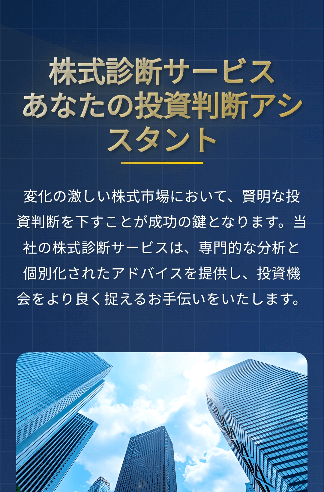
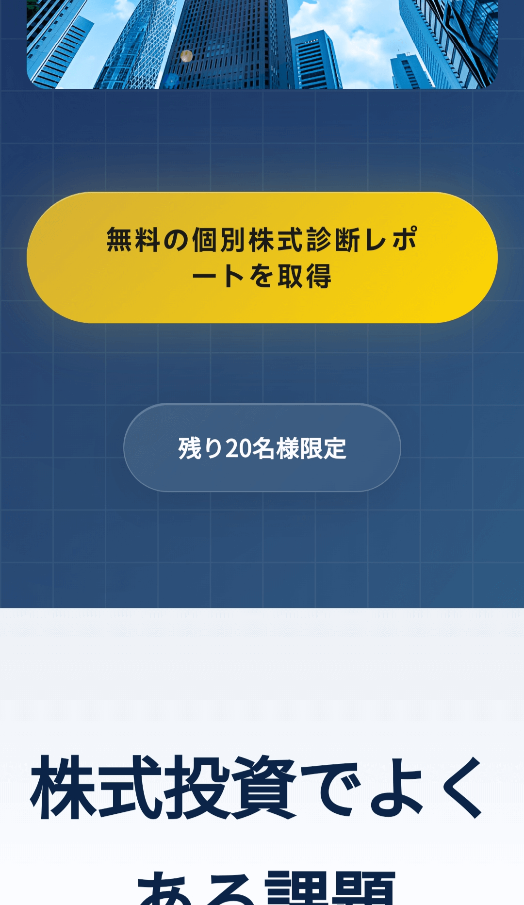
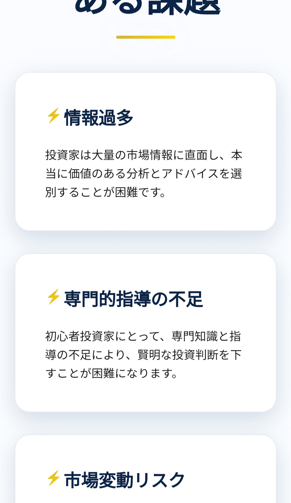
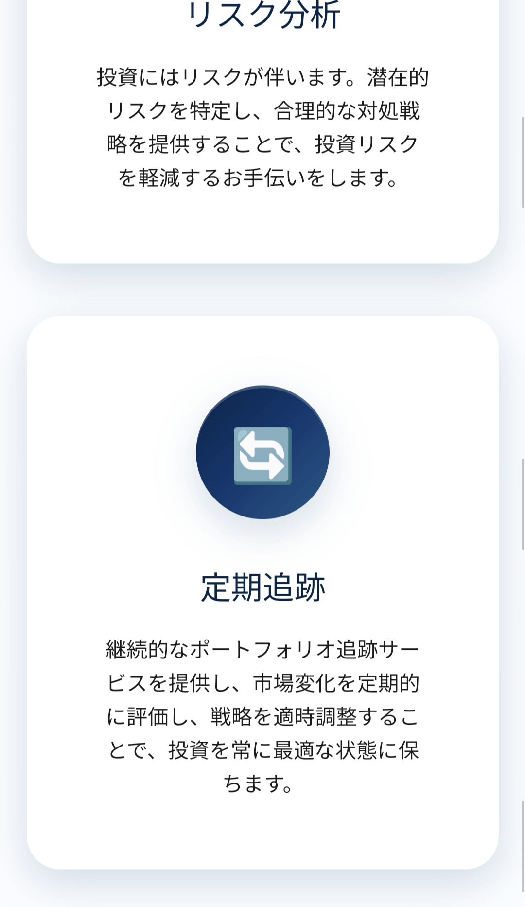
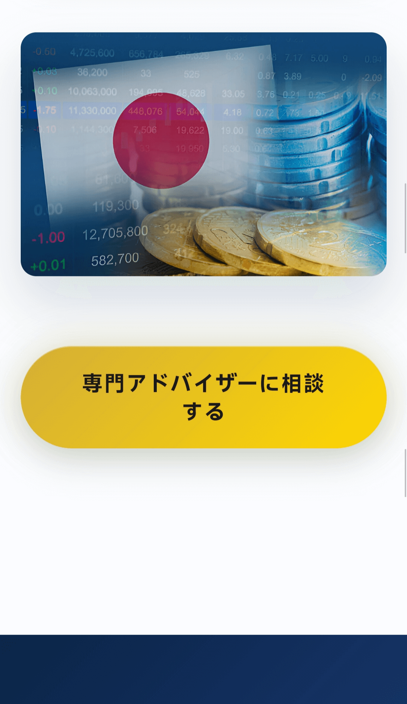
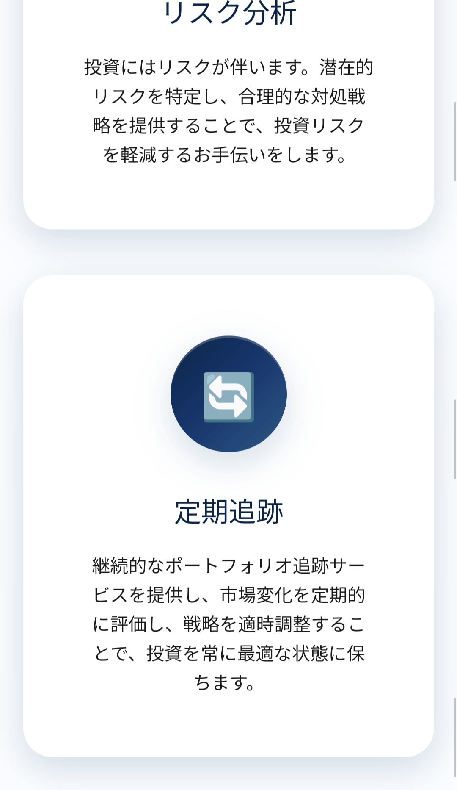
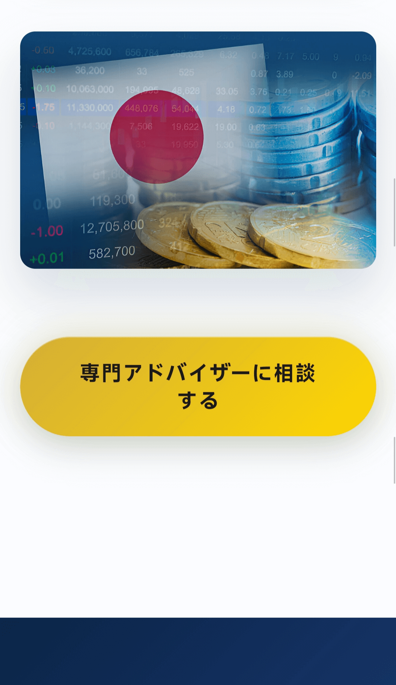
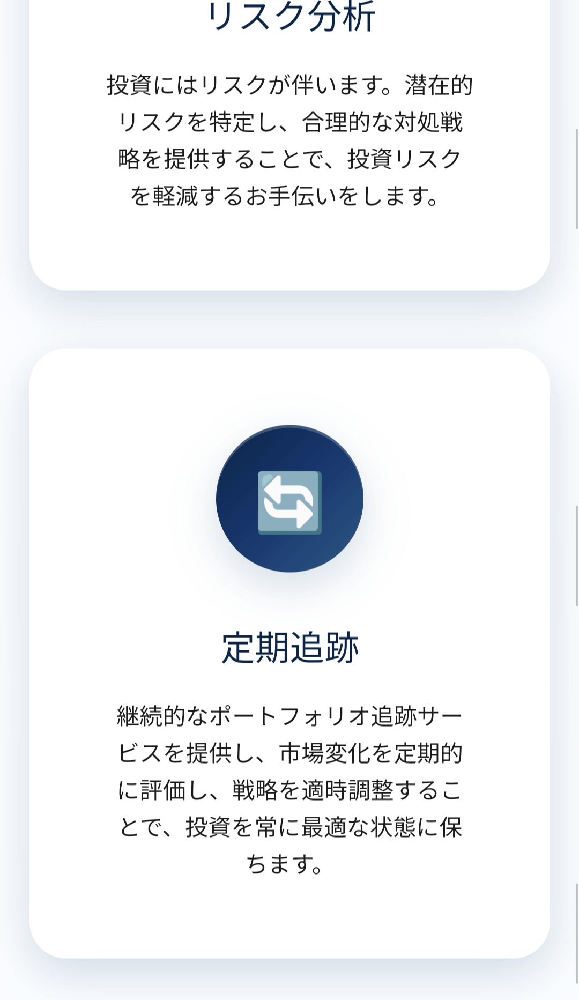
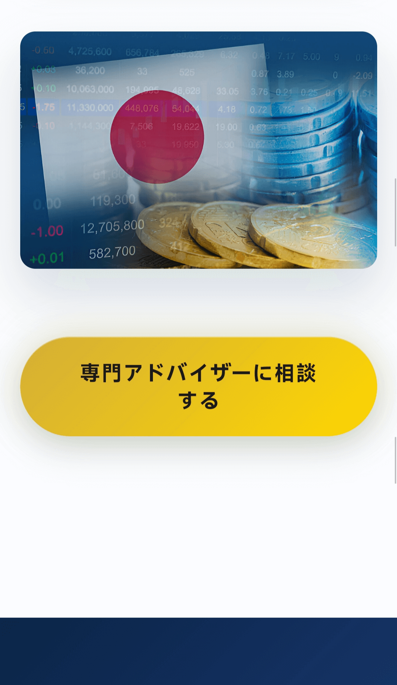

 






イノベーションエコシステムとスタートアップ企業
日本市場分析
1. 経済概況
日本は世界第3位の経済大国であり、製造業とサービス業が経済において重要な位置を占めています。近年、世界的な景気変動や人口高齢化といった国内課題の影響により、日本の経済成長は鈍化しています。
2. 人口動態の変化
日本は深刻な少子高齢化問題に直面しています。これは労働力不足と社会保障への負担増大につながり、政府は女性や高齢者の就労促進や外国人労働者の導入といった対策を講じています。
3. テクノロジーとイノベーション
日本は、特にロボット工学、エレクトロニクス、自動車製造業において、技術革新において依然として先進国です。企業と政府は、グリーンテクノロジーとデジタルトランスフォーメーションを推進するため、研究開発に積極的に投資しています。
5. 政策環境
日本政府は、経済成長と消費を促進するため、金融緩和や財政支出を含む様々な経済刺激策を実施してきました。中央銀行は、投資と消費を刺激することを目的として低金利政策を維持しています。
6. 将来展望
日本市場の将来は、人口動態の課題への対応、技術革新の促進、そして企業の競争力向上にかかっています。再生可能エネルギー、デジタルエコノミー、ヘルスケアテクノロジーといった分野に大きな投資機会が生まれることが期待されます。